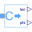
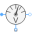
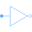

TransformerTestbenchTransformer test bench |
|
Diagram
{kind=link}
Information
This information is part of the Modelica Standard Library maintained by the Modelica Association.
Transformer test bench:You may choose different connections as well as vary the load (even not symmetrical).
Please pay attention to proper grounding of the primary and secondary part of the whole circuit.
The primary and secondary starpoint are available as connectors, if the connection is not delta (D or d).
In some cases it may be necessary to ground the transformer's starpoint even though the source's or load's starpoint are grounded; you may use a reasonable high earthing resistance.
Parameters (2)
| m |
Value: 3 Type: Integer Description: Number of phases |
|---|---|
| RL |
Value: fill(1 / 3, m) Type: Resistance[m] (Ω) Description: Load resistance |
Outputs (4)
Components (26)
| source |
Type: VoltageSource |
|
|---|---|---|
| starS |
Type: Star |
|
| groundS |
Type: Ground |
|
| electricalPowerSensorS |
Type: PowerSensor |
|
| currentSensorS |
Type: CurrentSensor |
|
|  | polarIS |
Type: ComplexToPolar |
|  | voltageSensorS |
Type: VoltageSensor |
| polarVS |
Type: ComplexToPolar |
|
|  | deltaS |
Type: Delta |
| earth |
Type: Resistor |
|
| groundT |
Type: Ground |
|
| voltageSensorL |
Type: VoltageSensor |
|
| polarVL |
Type: ComplexToPolar |
|
| deltaL |
Type: Delta |
|
| currentSensorL |
Type: CurrentSensor |
|
| polarIL |
Type: ComplexToPolar |
|
| electricalPowerSensorL |
Type: PowerSensor |
|
| load |
Type: Resistor |
|
| starL |
Type: Star |
|
| groundL |
Type: Ground |
|
| transformerData |
Type: TransformerData |
|
| transformer |
Type: Yd01 |
|
| symmetricalComponentsIS |
Type: SymmetricalComponents |
|
| symmetricalComponentsIL |
Type: SymmetricalComponents |
|
| symmetricalComponentsVS |
Type: SymmetricalComponents |
|
| symmetricalComponentsVL |
Type: SymmetricalComponents |